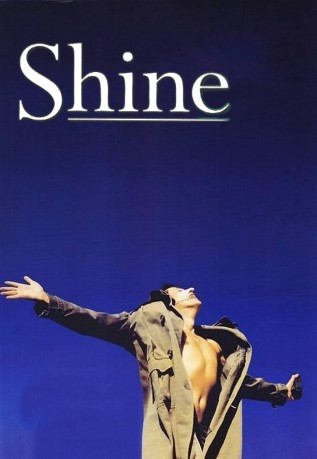
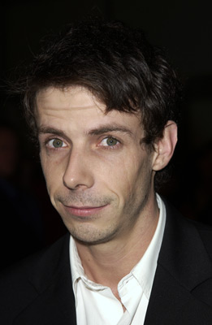
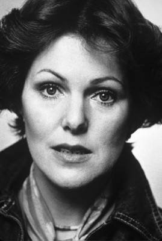

#10543 Shine - Der Weg ins Licht
Auszeichnungen: 1 Oscars gewonnen für 6 Oscars nominiert 1 GoldenGlobes gewonnen 2 BAFTA-Awards gewonnen
 
 IMDB-Wertung: 7.7 / 10
IMDB-Wertung: 7.7 / 10  Metascore: 87
Metascore: 87 
Erzählt wird die wahre Geschichte des australischen Pianisten David Helfgott, der sein Leben lang unter der Autorität seines Vaters leidet. Nach einem totalen psychischen und körperlichen Zusammenbruch verbringt David über zehn Jahre in Heilanstalten und Sanatorien. Erst als er der Astrologin Gilligan begegnet, bringt diese Ruhe und Stabilität in sein inneres Chaos. Durch sie wird aus dem gebrochenen Genie wieder ein Konzertpianist, der die Welt begeistert und endliche seine Vergangenheit hinter sich lassen kann.
Jahr: 1996
Dauer: 105 Minuten
FSK: 12
Land: Australien Studio: Buena Vista Home EntertainmentTonspuren: DTS - ,
Untertitel: Deutsch,
Auflösung: 1080p (1920x1040) Größe: 10076 MB
Genre: Drama, Musik, Liebe, Biographie
Regisseur: Scott Hicks
Drehbuch: Jan Sardi, Scott Hicks
Soundtrack: David Hirschfelder
Darsteller:
 Geoffrey Rush als David Helfgott - Adult
Geoffrey Rush als David Helfgott - Adult- Sonia Todd als Sylvia
 Chris Haywood als Sam
Chris Haywood als Sam Armin Mueller-Stahl als Peter
Armin Mueller-Stahl als Peter Nicholas Bell als Ben Rosen
Nicholas Bell als Ben Rosen- Marta Kaczmarek als Rachel
-  Noah Taylor als David Helfgott - Adolescent
- Randall Berger als Isaac Stern
- Edwin Hodgeman als Soviet Society Secretary
- Googie Withers als Katharine Susannah Prichard
 John Gielgud als Cecil Parkes
John Gielgud als Cecil Parkes- Richard Hansell als Ashley
 Marc Warren als Ray
Marc Warren als Ray- Joey Kennedy als Suzie - Adult
-  Lynn Redgrave als Gillian
- John Martin als Roger Woodward - Older
- Sandi Gardiner als Restaurant Customer (uncredited)
- Justin Braine als Tony
- Alex Rafalowicz als David Helfgott - Child
- Gordon Poole als Eisteddfod Presenter
- Danielle Cox als Suzie - Child
- Rebecca Gooden als Margaret
- John Cousins als Jim Minogue
- Paul Linkson als State Champion Announcer
- Ian Welbourne als Boy Next Door
- Kelly Bottrill als Louise - Baby
- Beverley Vaughan als Rabbi
- Phyllis Burford als Synagogue Secretary
- Daphne Grey als Society Hostess
- Maria Dafnero als Sonia
- Reis Porter als Postman
- Stephen Sheehan als Roger Woodward - Younger
- Brenton Whittle als Announcer
- Marianna Doherty als Suzie - Teenager
- Camilla James als Louise - Child
- David King als Viney
- Danny Davies als Registrar
- Helen Dowell als Sarah
- Louise Dorling als Muriel
- Sean Carlsen als Student
- Robert Hands als Robert
- Neil Thomson als RCOM Conductor
- Ellen Cressey als Nurse
- Beverley Dunn als Beryl Alcott
- Andy Seymour als Bar Customer
- Ella Scott Lynch als Jessica
- Jethro Heysen-Hicks als Rowan
- Bill Boyley als Celebrant
- Teresa La Rocca als Opera Singer
- Lindsey Day als Opera Singer
Datei: X:\1996\Shine - Der Weg ins Licht (1996, FSK12, 1920x1040).mkv seit 18.01.2019
Festplatte: Gemischt-01+Anime
 Es gibt insgesamt 78 Filme in der Gruppe '1996'
Es gibt insgesamt 78 Filme in der Gruppe '1996'